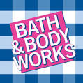

All of the brands I reccomend are currently available on major business websites such as Amazon, or on their respected websites. However, Peter purchases them at his local mall because he prefers to go to the store himself and smell all the candles in the store to make sure he finds the right candle. Below is 4 candle company bands and which ones I do and do not reccomend.
Each page is broken up by company

©Bed Bath and Beyond
Bath and Body Works is a highly reputable brand in the Candle market due to its high quality candles and addictive scents. The brand offers a wide range of fragrances to satisfy everyone without there being too many scents that are overpowering. Bath and Body provides some of the highest quality candles out there and at its current price point, you will certainly get your moneys worth. As someone who has owns many bath and body work candles, I highly reccomend choosing this brand over all others.
© Yankee Candle
Yankee Candle is the oldest standing brand on this list. The candles themselves are built to last for a long time and have a high performance wick. The candles burn down evenly unlike cheaper brands which take them a long time to be used up. Additionally, their candles are made of natural material with no artificial ingredients. However, with being the highest quality, Yankee Candle is also the most expensive candles on the market. A candle about the same size as Bath and Body Works would cost you around double the amount for a Yankee Candle. Suprisingly, I was never blown away by this brand. While my parents adore the brand and buy most of their candles from Yankee Candle, I find a majority of their fragrances to be not to my liking. Overall, If your budget is tight, I would not reccomend this brand, however if you are not concerned about the pricepoint then I would reccomend this brand.
©Dollar General
Trueliving is known as the cheapest and the lowest of the low when it comes to candle brands. They are often sold in dollar stores as well as cheap convenient stores. My experience with one of these candles was that I purchased it for 3 dollars at my local dollar tree and within two sessions of being lit for about an hour the candle was unusable. The fragrances are not satisfying, the quality of the candle itself is poor as it runs out quick, and the design of the candle theres only one place to light it so once the wax gets low enough to where your math or lighter cannot reach it, the candle is no longer usuable. Overall, I would not reccoment this brand as I believe it is worth the couple extra bucks to purchase a higher quality brand.